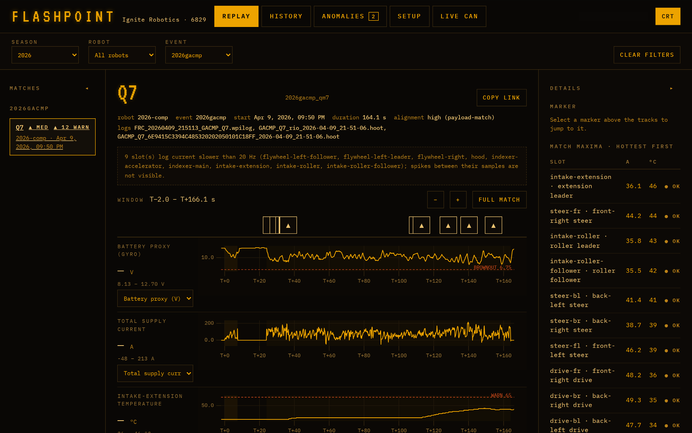
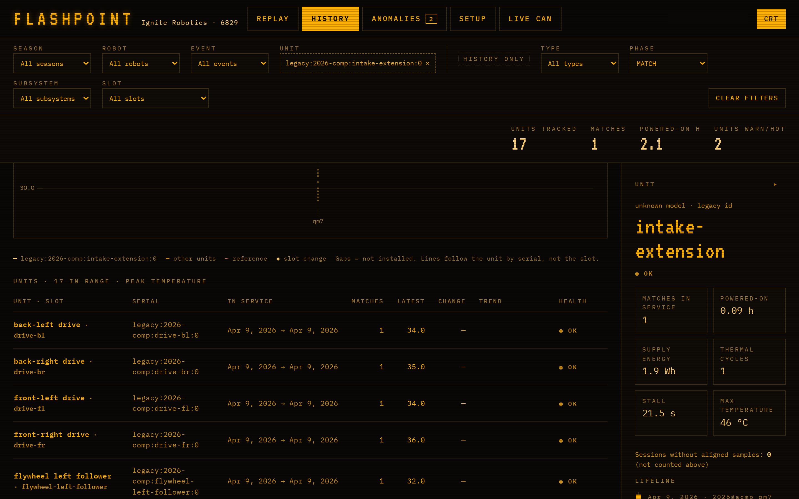
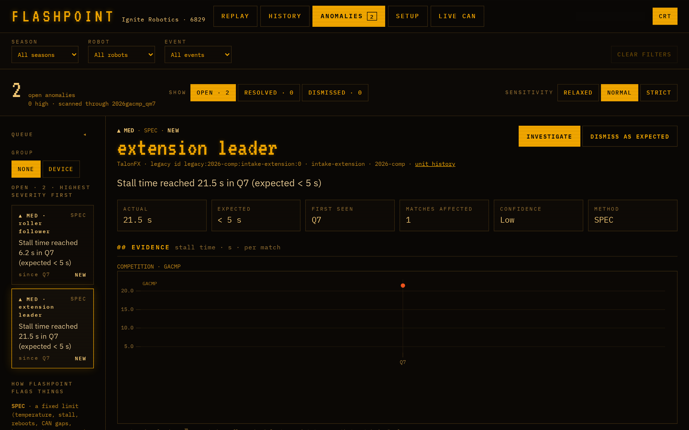
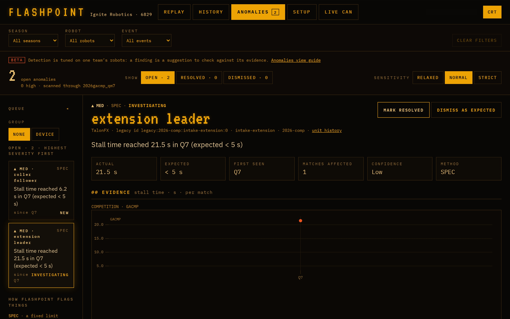

Your first event¶
A worked example of what you'll do at an event, with real logs: one qualification match from team 6829's robot at the 2026 Georgia district championship. You'll copy the logs off a "USB stick", import them, find the hottest motor, follow it in History, triage what Flashpoint flagged about it, and put Replay on a stick for the drive coach.
It takes about 20 minutes. Everything happens in a folder of its own, with the sample's own configuration, so your configuration and lake aren't touched.
Before you start:
- Flashpoint is installed (Install), and you've had internet once, so the hoot converter can download.
- You have the sample bundle, flashpoint-sample-1.zip, downloaded and checked: follow the first three lines of Try it with sample logs, in an empty folder.
The commands below are for macOS and Linux, with the Windows (PowerShell) form in the second tab.
1. Copy the logs off the stick¶
At an event, the robot writes its logs to a USB stick in the roboRIO. Between matches you pull the stick and copy the new files onto the pit laptop. Here, the bundle's logs/ folder stands in for the stick.
unzip -q flashpoint-sample-1.zip -d flashpoint-sample
mkdir -p gacmp/q7
cp flashpoint-sample/logs/* gacmp/q7/
Expand-Archive flashpoint-sample-1.zip -DestinationPath flashpoint-sample
New-Item -ItemType Directory -Force gacmp\q7
Copy-Item flashpoint-sample\logs\* gacmp\q7\
gacmp/q7/ now has one match's files: the WPILib data log (FRC_20260409_215113_GACMP_Q7.wpilog) and a CTRE hoot for each CAN bus (..._rio_...hoot for the roboRIO's bus, and one named by the CANivore's id). That's what a match looks like on the stick. Import logs from a USB stick has the details for your own robot.
2. Import them¶
Point Flashpoint at the sample's configuration (Ignite's robot file, which says which motor is which) and a lake of its own, and import the folder:
export FLASHPOINT_CONFIG="$PWD/flashpoint-sample/config"
flashpoint ingest --lake "$PWD/gacmp-lake" gacmp/q7
$env:FLASHPOINT_CONFIG = "$PWD\flashpoint-sample\config"
flashpoint ingest --lake "$PWD\gacmp-lake" gacmp\q7
It takes about 10 seconds. The end of what it prints:
derived 1 of 1 session(s)
detected 2 anomalies (0 HIGH, 2 MED, 0 LOW); 22 unit(s) building baseline; scanned through 2026gacmp_qm7
ingested FRC_20260409_215113_GACMP_Q7.wpilog
ingested GACMP_Q7_6E9415C3394C485320202050101C18FF_2026-04-09_21-51-06.hoot
ingested GACMP_Q7_rio_2026-04-09_21-51-06.hoot
3 ingested, 0 skipped, 0 failed, 0 quarantined, 0 quarantined earlier in 10.0s
built 1, unchanged 0, removed 0; 1 match(es) listed in 0.6s
Flashpoint copied the three files into the lake, worked out that they're one match (2026gacmp_qm7), lined the hoots up with the wpilog, ran anomaly detection (two findings) and built the match for Replay. One line before that notes 10 declared signal(s) not written: Ignite's robot file lists CAN bus status entries that this match's robot code didn't log yet. That's expected here.
Run the same command after every match. Files already in the lake are skipped, so you can import the whole stick each time.
3. Find the hottest motor in Replay¶
Start the app:
flashpoint serve --lake "$PWD/gacmp-lake"
(PowerShell: flashpoint serve --lake "$PWD\gacmp-lake", in the same window, so FLASHPOINT_CONFIG is still set.) Open http://127.0.0.1:8000/. Replay opens with the match list on the left. Click Q7:

- The header line says the match lined up with high alignment (payload-match), and shows its robot, start and length.
- The tracks show the battery (Ignite's gyro is the battery proxy), total supply current, and the hottest motor's temperature, over the whole match. Auto and teleop are shaded.
- The markers above the tracks are rule hits: Q7 has 12 WARN markers. Click one to jump to it.
- A note at the top says nine slots log current slower than 20 Hz. On this robot, the roboRIO-bus motors ran at 4 Hz (why that matters).
Now look at the panel on the right. With no cursor on the tracks, it lists match maxima, hottest first:

The top row is intake-extension, the intake's extension leader, at 46 °C. That's well under the 65 °C warning line, so it's healthy, but it's the motor working hardest in this match. Hover over the tracks to see every motor's values at that moment.
4. Follow that motor in History¶
Click HISTORY in the header. History shows every motor across every match in the lake. With one match imported there's one point per motor, which is where every motor's history starts. Each match you import adds a point.
In the units table, click intake-extension:

The panel on the right is that motor's record: matches in service, powered-on time, supply energy, thermal cycles, and stall: 21.5 s. A motor stalls when it's pushing hard but barely turning. For an extension that holds against a hard stop, some stall is normal; 21.5 s in one match is a lot. Its unit id is legacy:2026-comp:intake-extension:0: this robot didn't log a CAN inventory yet, so History follows the slot rather than the motor's serial number (CAN inventory).
5. Triage what Flashpoint flagged¶
The header's ANOMALIES tab shows 2. Click it. The queue on the left lists both findings, highest severity first. Click Stall time reached 21.5 s in Q7 (expected < 5 s):

It's a MED finding from the SPEC method: a fixed limit (5 s of stall per match) that this motor went past. The evidence chart shows the value per match, and further down, likely causes suggest what to check. Anomalies is beta: treat each finding as a suggestion to look at, not a verdict (Triage an anomaly).
Someone on the team is going to check the extension, so record that. Press INVESTIGATE:

The finding now reads INVESTIGATING, and offers MARK RESOLVED (you fixed something, and say what) and DISMISS AS EXPECTED (it's normal for this mechanism, and say why). Triage is saved in the lake (and its backup), so the next person to open Anomalies sees that it's being looked at. Leave it at INVESTIGATING for now.
6. Put Replay on a USB stick¶
The drive coach wants to look at Q7 on their own laptop, which doesn't have Flashpoint. Stop the app with Ctrl-C, then export Replay to a folder (on a real event day, the folder would be on a USB stick):
flashpoint report --lake "$PWD/gacmp-lake" --static replay-stick --no-raw
flashpoint report --lake "$PWD\gacmp-lake" --static replay-stick --no-raw
It prints exported 1 match(es) to ... with the path of index.html. Open that file in a browser: it's the same Replay, with no server and no internet. --no-raw leaves the log files out, which keeps the folder small; leave it off to include them for download. Take Replay on a USB stick has the rest.
Check it worked¶
gacmp-lake/exists andflashpoint doctor --lake "$PWD/gacmp-lake"runs.- Replay listed Q7, and its readout put intake-extension first at 46 °C.
- Anomalies shows the stall finding as INVESTIGATING.
replay-stick/index.htmlopens Replay in a browser.
To clean up, close this terminal window (so FLASHPOINT_CONFIG goes back to your own configuration) and delete this folder. If a step didn't match what's here, see Troubleshooting.
Next¶
- Set Flashpoint up for your own team and robot: Setting up Flashpoint for your team.
- Get more out of your logs: Robot side: what to log. This robot would have had full-rate current on every motor, and serial-number tracking, with the first and sixth rows of that list.